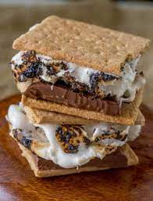

S'mores

Description
The perfect snack to make during camping but just as great made at home!
Ingredients
- 4 tablespoons butter
- 1 graham cracker, crushed to crumbs
- 3 tablespoons milk
- 1 large egg, whisked
- 4 tablespoons all-purpose flour
- 3 tablespoons sugar
- 3 tablespoons cocoa powder
- 1/2 teaspoon baking powder
- Kosher salt
- 32 mini or 4 large marshmallows
Steps
- Microwave 1 tablespoon of the butter in a microwave-safe mug until melted, about 20 seconds. Add the graham cracker crumbs and stir to combine. Transfer half of the crumbs into another microwave-safe mug and press the crumbs down into the bottom of each mug.
- Microwave the remaining 3 tablespoons butter in a microwave-safe bowl until melted, 20 to 30 seconds. Add the milk and egg and whisk to combine. Add the flour, sugar, cocoa powder, baking powder and a pinch of salt and whisk until smooth.
- Divide 1/4 of the batter into each mug and top each with 8 mini marshmallows or 1 large marshmallow. Divide the remaining batter into each mug and top each with 8 mini marshmallows or 1 large marshmallow.
- Microwave the mugs for 1 minute to 1 minute 15 seconds, watching towards the end to make sure the cakes don't overflow.